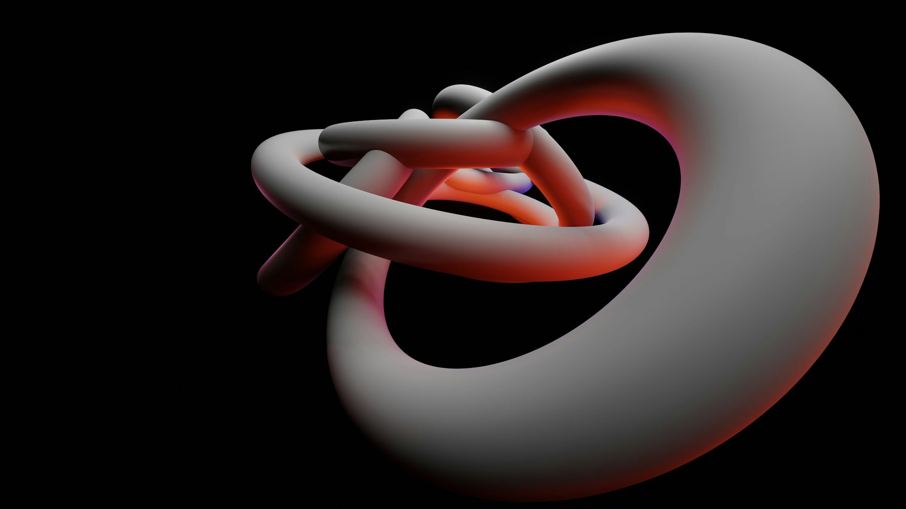
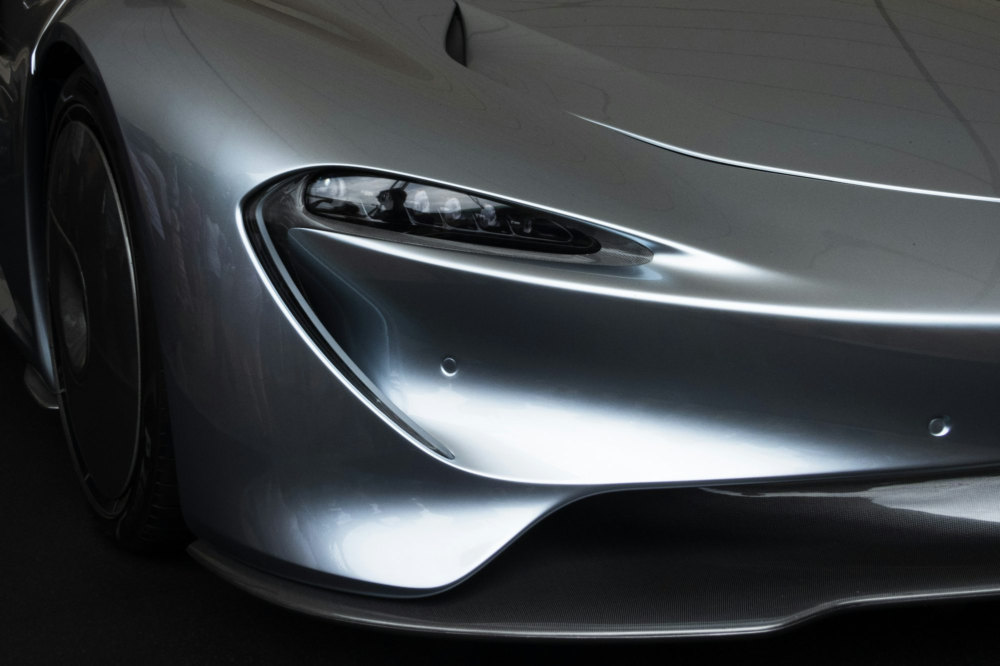
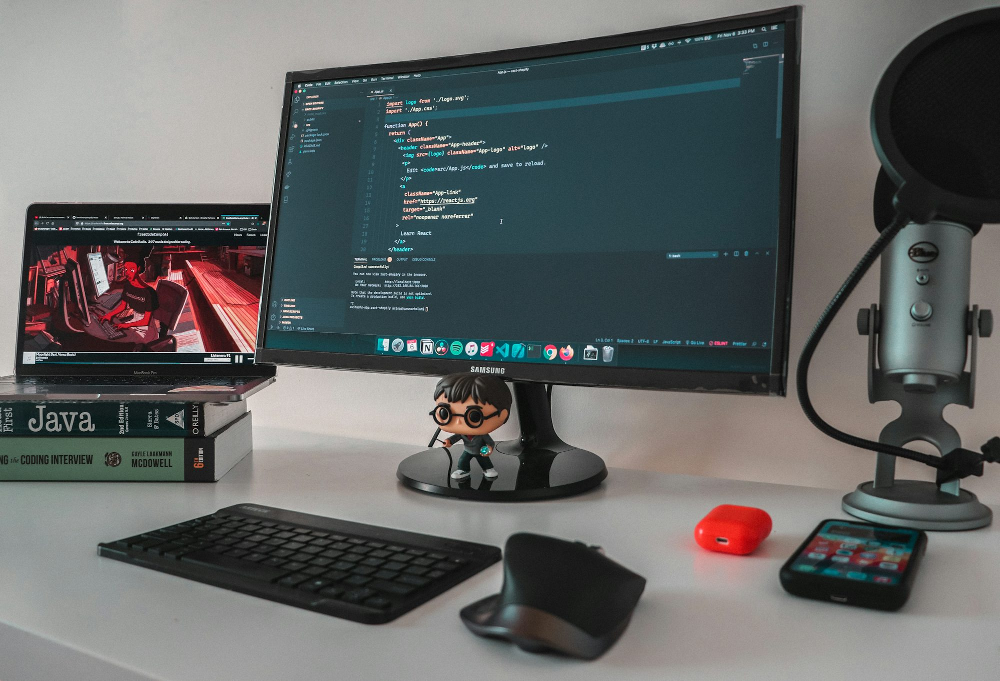
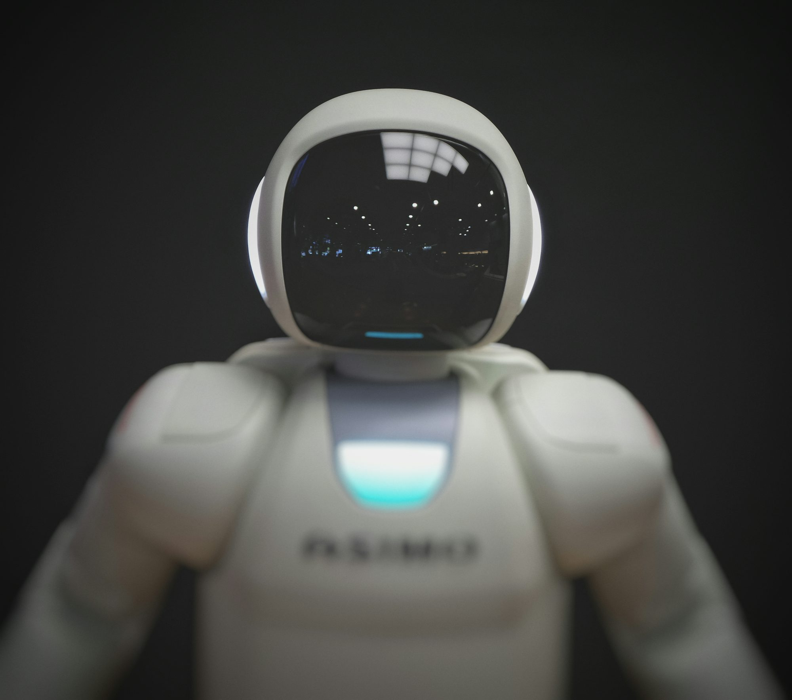

The Evolution of Electric Vehicles: Driving Towards a Greener Future
This article explores the history, technology, and future prospects of electric vehicles, highlighting their environmental benefits and the challenges they face.Visual narratives

Client Communication Portal
Exploring the Future of Renewable Energy: Innovations and Impacts
This article examines the current trends in renewable energy, highlighting key innovations and their potential impact on the global energy landscape.
The Future of Transportation: Innovations Driving Change
An in-depth exploration of the latest innovations in transportation, including autonomous vehicles, high-speed rail, and sustainable practices shaping the future of travel.
Lucas Chen
Thursday, July 17th 2025
The Digital Revolution: Transforming Everyday Life
This article explores how digital technology reshapes our daily interactions, learning, entertainment, and business practices.
Exploring the Future of Quantum Computing: Unleashing New Possibilities
This article delves into the realm of quantum computing, discussing its principles, applications, potential benefits, and the future of this groundbreaking technology.

Java: The Cornerstone of Modern Application Development
An exploration of Java's enduring significance, its core features, and its applications in various domains of software development.
Emily Johnson
Wednesday, December 18th 2024
Sustainable Urban Design: Building the Cities of Tomorrow
This article explores the principles of sustainable urban design, emphasizing the importance of eco-friendly practices and innovative solutions for future cities.
Emma Rodriguez
Thursday, July 24th 2025
Embracing the Future of E-Learning: Trends and Innovations
This article explores the evolving landscape of e-learning, highlighting key trends, innovations, and best practices for effective online education.
Lucas Hartman
Thursday, April 10th 2025
The Rise of Green Technology: Paving the Way for a Sustainable Future
An in-depth look at the advancements in green technology, exploring how innovations in renewable energy, sustainable materials, and eco-friendly practices are transforming industries and promoting environmental sustainability.

Lucas Meyer
Thursday, March 13th 2025